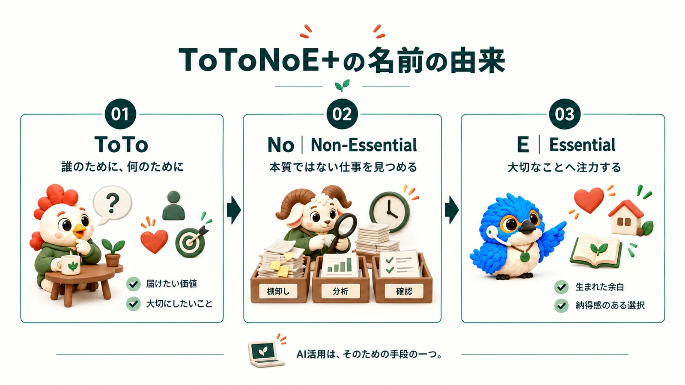
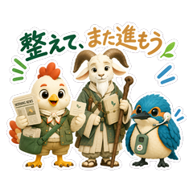
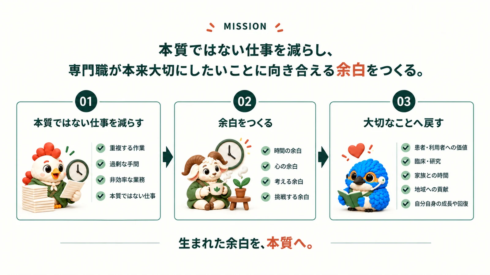

神藤 俊希
代表
代表／事業・社会実装デザイン領域リード
Representative / Business & Social Design Lead
TEAM
ToToNoE+は、医療・介護を原点に、AI活用、情報整理、発信、学習の仕組みづくりを通じて、専門職が本質に向き合える余白を整えるチームプロジェクトです。
OUR NAME
誰のために、何のために。
本質を問い、大切なことに向き合えるように「整える」。その考え方を名前に込めています。


AIを使うことから始めるのではなく、大切にしたいことから考える。業務の見直しや情報整理、学びの仕組みづくりとともに、必要な場面でAIを活かしていきます。
PHILOSOPHY
ToToNoE+は、AIやDXを目的にせず、本質ではない仕事を減らし、専門職が大切にしたいことへ向き合える余白をつくるチームです。

MEMBERS
週末のAI整え習慣をはじめ、ToToNoE+の活動を支えるメンバーです。
代表
代表／事業・社会実装デザイン領域リード
Representative / Business & Social Design Lead

AIガバナンス・リテラシー領域リード
AI Governance & Literacy Lead
AI業務実装・教育・研修設計領域リード
AI Operations & HR Design Lead
産業保健・体験設計領域リード
Occupational Health & Experience Design Lead

建設DX・データサイエンス領域リード
Construction DX & Data Science Lead

臨床実践・現場適合性領域リード
Clinical Practice & Usability Lead

地域産業保健・啓発領域リード
Regional Occupational Health & Work-Life Design Lead

動作・パフォーマンス設計領域リード
Movement & Performance Design Lead

ブランディング・マネジメント設計領域リード
Branding & Management Design Lead

脳卒中リハビリテーション・イノベーション領域リード
Stroke Rehabilitation & Innovation Lead